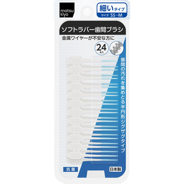

返回列表
产品名称：ｍａｔｓｕｋｉｙｏ ソフトラバー歯間ブラシSS～M

ジャックス ｍａｔｓｕｋｉｙｏ ソフトラバー歯間ブラシSS～M ２４本入
メーカー ジャックス
JANコード 4973227713038
商品の特徴
細いタイプです。
日本製歯と歯グキにやさしく金属ワイヤーが不安な方におすすめのソフトラバーです。
ブラシ部が半円形ジグザグタイプで歯間の汚れがしっかり取れます。
抗菌仕様で清潔です。
成分・分量
材質
柄：ポリプロピレン
ブラシ部：SBC
用法及び用量
使用方法
・歯間ブラシを1本ずつ取り外してご使用ください。
・鏡を見ながら、歯グキを傷つけないように歯と歯のあいだにゆっくり挿入し、前後に動かしてください。